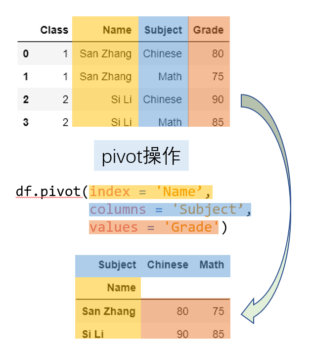
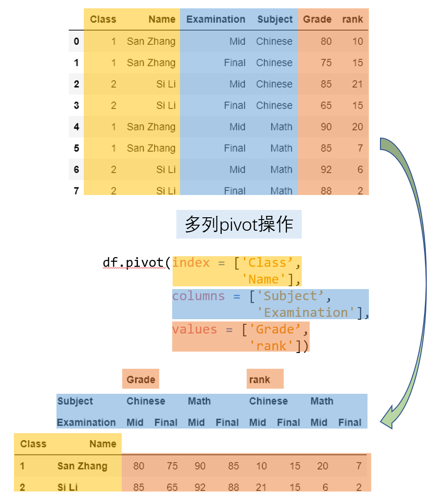
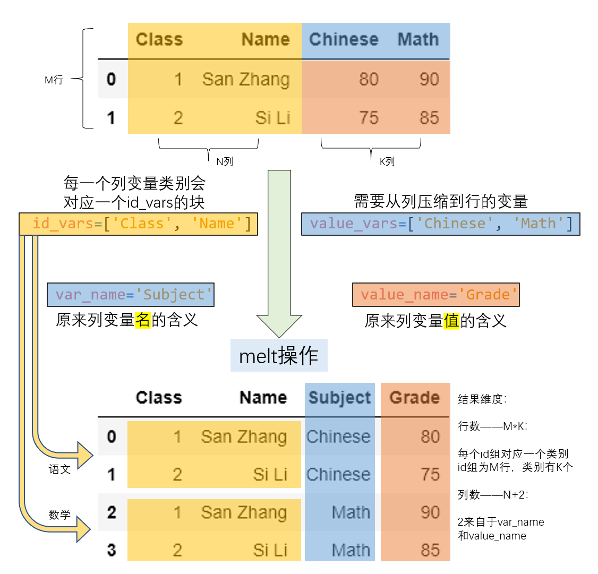
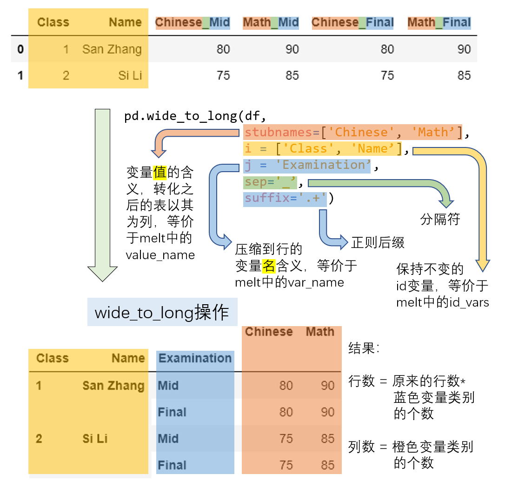
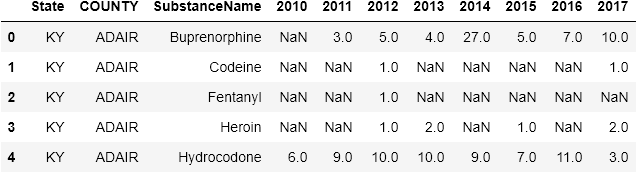

五、变形
一、长宽表的变形
什么是长表？什么是宽表？这个概念是对于某一个特征而言的。例如：一个表中把性别存储在某一个列中，那么它就是关于性别的长表；如果把性别作为列名，列中的元素是某一其他的相关特征数值，那么这个表是关于性别的宽表。下面的两张表就分别是关于性别的长表和宽表：
In [3]: pd.DataFrame({'Gender':['F','F','M','M'],
...: 'Height':[163, 160, 175, 180]})
...:
Out[3]:
Gender Height
0 F 163
1 F 160
2 M 175
3 M 180
In [4]: pd.DataFrame({'Height: F':[163, 160],
...: 'Height: M':[175, 180]})
...:
Out[4]:
Height: F Height: M
0 163 175
1 160 180
显然这两张表从信息上是完全等价的，它们包含相同的身高统计数值，只是这些数值的呈现方式不同，而其呈现方式主要又与性别一列选择的布局模式有关，即到底是以 long 的状态存储还是以 wide 的状态存储。因此， pandas 针对此类长宽表的变形操作设计了一些有关的变形函数。
1. pivot
pivot 是一种典型的长表变宽表的函数，首先来看一个例子：下表存储了张三和李四的语文和数学分数，现在想要把语文和数学分数作为列来展示。
In [5]: df = pd.DataFrame({'Class':[1,1,2,2],
...: 'Name':['San Zhang','San Zhang','Si Li','Si Li'],
...: 'Subject':['Chinese','Math','Chinese','Math'],
...: 'Grade':[80,75,90,85]})
...:
In [6]: df
Out[6]:
Class Name Subject Grade
0 1 San Zhang Chinese 80
1 1 San Zhang Math 75
2 2 Si Li Chinese 90
3 2 Si Li Math 85
对于一个基本的长变宽操作而言，最重要的有三个要素，分别是变形后的行索引、需要转到列索引的列，以及这些列和行索引对应的数值，它们分别对应了 pivot 方法中的 index, columns, values 参数。新生成表的列索引是 columns 对应列的 unique 值，而新表的行索引是 index 对应列的 unique 值，而 values 对应了想要展示的数值列。
In [7]: df.pivot(index='Name', columns='Subject', values='Grade')
Out[7]:
Subject Chinese Math
Name
San Zhang 80 75
Si Li 90 85
通过颜色的标记，更容易地能够理解其变形的过程：

利用 pivot 进行变形操作需要满足唯一性的要求，即由于在新表中的行列索引对应了唯一的 value ，因此原表中的 index 和 columns 对应两个列的行组合必须唯一。例如，现在把原表中第二行张三的数学改为语文就会报错，这是由于 Name 与 Subject 的组合中两次出现 ("San Zhang", "Chinese") ，从而最后不能够确定到底变形后应该是填写 80 分还是 75 分。
In [8]: df.loc[1, 'Subject'] = 'Chinese'
In [9]: try:
...: df.pivot(index='Name', columns='Subject', values='Grade')
...: except Exception as e:
...: Err_Msg = e
...:
In [10]: Err_Msg
Out[10]: ValueError('Index contains duplicate entries, cannot reshape')
pandas 从 1.1.0 开始， pivot 相关的三个参数允许被设置为列表，这也意味着会返回多级索引。这里构造一个相应的例子来说明如何使用：下表中六列分别为班级、姓名、测试类型（期中考试和期末考试）、科目、成绩、排名。
In [11]: df = pd.DataFrame({'Class':[1, 1, 2, 2, 1, 1, 2, 2],
....: 'Name':['San Zhang', 'San Zhang', 'Si Li', 'Si Li',
....: 'San Zhang', 'San Zhang', 'Si Li', 'Si Li'],
....: 'Examination': ['Mid', 'Final', 'Mid', 'Final',
....: 'Mid', 'Final', 'Mid', 'Final'],
....: 'Subject':['Chinese', 'Chinese', 'Chinese', 'Chinese',
....: 'Math', 'Math', 'Math', 'Math'],
....: 'Grade':[80, 75, 85, 65, 90, 85, 92, 88],
....: 'rank':[10, 15, 21, 15, 20, 7, 6, 2]})
....:
In [12]: df
Out[12]:
Class Name Examination Subject Grade rank
0 1 San Zhang Mid Chinese 80 10
1 1 San Zhang Final Chinese 75 15
2 2 Si Li Mid Chinese 85 21
3 2 Si Li Final Chinese 65 15
4 1 San Zhang Mid Math 90 20
5 1 San Zhang Final Math 85 7
6 2 Si Li Mid Math 92 6
7 2 Si Li Final Math 88 2
现在想要把测试类型和科目联合组成的四个类别（期中语文、期末语文、期中数学、期末数学）转到列索引，并且同时统计成绩和排名：
In [13]: pivot_multi = df.pivot(index = ['Class', 'Name'],
....: columns = ['Subject','Examination'],
....: values = ['Grade','rank'])
....:
In [14]: pivot_multi
Out[14]:
Grade rank
Subject Chinese Math Chinese Math
Examination Mid Final Mid Final Mid Final Mid Final
Class Name
1 San Zhang 80 75 90 85 10 15 20 7
2 Si Li 85 65 92 88 21 15 6 2
根据唯一性原则，新表的行索引等价于对 index 中的多列使用 drop_duplicates ，而列索引的长度为 values 中的元素个数乘以 columns 的唯一组合数量（与 index 类似） 。从下面的示意图中能够比较容易地理解相应的操作：

2. pivot_table
pivot 的使用依赖于唯一性条件，那如果不满足唯一性条件，那么必须通过聚合操作使得相同行列组合对应的多个值变为一个值。例如，张三和李四都参加了两次语文考试和数学考试，按照学院规定，最后的成绩是两次考试分数的平均值，此时就无法通过 pivot 函数来完成。
In [15]: df = pd.DataFrame({'Name':['San Zhang', 'San Zhang',
....: 'San Zhang', 'San Zhang',
....: 'Si Li', 'Si Li', 'Si Li', 'Si Li'],
....: 'Subject':['Chinese', 'Chinese', 'Math', 'Math',
....: 'Chinese', 'Chinese', 'Math', 'Math'],
....: 'Grade':[80, 90, 100, 90, 70, 80, 85, 95]})
....:
In [16]: df
Out[16]:
Name Subject Grade
0 San Zhang Chinese 80
1 San Zhang Chinese 90
2 San Zhang Math 100
3 San Zhang Math 90
4 Si Li Chinese 70
5 Si Li Chinese 80
6 Si Li Math 85
7 Si Li Math 95
pandas 中提供了 pivot_table 来实现，其中的 aggfunc 参数就是使用的聚合函数。上述场景可以如下写出：
In [17]: df.pivot_table(index = 'Name',
....: columns = 'Subject',
....: values = 'Grade',
....: aggfunc = 'mean')
....:
Out[17]:
Subject Chinese Math
Name
San Zhang 85 95
Si Li 75 90
这里传入 aggfunc 包含了上一章中介绍的所有合法聚合字符串，此外还可以传入以序列为输入标量为输出的聚合函数来实现自定义操作，上述功能可以等价写出：
In [18]: df.pivot_table(index = 'Name',
....: columns = 'Subject',
....: values = 'Grade',
....: aggfunc = lambda x:x.mean())
....:
Out[18]:
Subject Chinese Math
Name
San Zhang 85 95
Si Li 75 90
此外， pivot_table 具有边际汇总的功能，可以通过设置 margins=True 来实现，其中边际的聚合方式与 aggfunc 中给出的聚合方法一致。下面就分别统计了语文均分和数学均分、张三均分和李四均分，以及总体所有分数的均分：
In [19]: df.pivot_table(index = 'Name',
....: columns = 'Subject',
....: values = 'Grade',
....: aggfunc='mean',
....: margins=True)
....:
Out[19]:
Subject Chinese Math All
Name
San Zhang 85 95.0 90.00
Si Li 75 90.0 82.50
All 80 92.5 86.25
练一练
在上面的边际汇总例子中，行或列的汇总为新表中行元素或者列元素的平均值，而总体的汇总为新表中四个元素的平均值。这种关系一定成立吗？若不成立，请给出一个例子来说明。
3. melt
长宽表只是数据呈现方式的差异，但其包含的信息量是等价的，前面提到了利用 pivot 把长表转为宽表，那么就可以通过相应的逆操作把宽表转为长表， melt 函数就起到了这样的作用。在下面的例子中， Subject 以列索引的形式存储，现在想要将其压缩到一个列中。
In [20]: df = pd.DataFrame({'Class':[1,2],
....: 'Name':['San Zhang', 'Si Li'],
....: 'Chinese':[80, 90],
....: 'Math':[80, 75]})
....:
In [21]: df
Out[21]:
Class Name Chinese Math
0 1 San Zhang 80 80
1 2 Si Li 90 75
In [22]: df_melted = df.melt(id_vars = ['Class', 'Name'],
....: value_vars = ['Chinese', 'Math'],
....: var_name = 'Subject',
....: value_name = 'Grade')
....:
In [23]: df_melted
Out[23]:
Class Name Subject Grade
0 1 San Zhang Chinese 80
1 2 Si Li Chinese 90
2 1 San Zhang Math 80
3 2 Si Li Math 75
melt 的主要参数和压缩的过程如下图所示：

前面提到了 melt 和 pivot 是一组互逆过程，那么就一定可以通过 pivot 操作把 df_melted 转回 df 的形式：
In [24]: df_unmelted = df_melted.pivot(index = ['Class', 'Name'],
....: columns='Subject',
....: values='Grade')
....:
In [25]: df_unmelted # 下面需要恢复索引，并且重命名列索引名称
Out[25]:
Subject Chinese Math
Class Name
1 San Zhang 80 80
2 Si Li 90 75
In [26]: df_unmelted = df_unmelted.reset_index().rename_axis(
....: columns={'Subject':''})
....:
In [27]: df_unmelted.equals(df)
Out[27]: True
4. wide_to_long
melt 方法中，在列索引中被压缩的一组值对应的列元素只能代表同一层次的含义，即 values_name 。现在如果列中包含了交叉类别，比如期中期末的类别和语文数学的类别，那么想要把 values_name 对应的 Grade 扩充为两列分别对应语文分数和数学分数，只把期中期末的信息压缩，这种需求下就要使用 wide_to_long 函数来完成。
In [28]: df = pd.DataFrame({'Class':[1,2],'Name':['San Zhang', 'Si Li'],
....: 'Chinese_Mid':[80, 75], 'Math_Mid':[90, 85],
....: 'Chinese_Final':[80, 75], 'Math_Final':[90, 85]})
....:
In [29]: df
Out[29]:
Class Name Chinese_Mid Math_Mid Chinese_Final Math_Final
0 1 San Zhang 80 90 80 90
1 2 Si Li 75 85 75 85
In [30]: pd.wide_to_long(df,
....: stubnames=['Chinese', 'Math'],
....: i = ['Class', 'Name'],
....: j='Examination',
....: sep='_',
....: suffix='.+')
....:
Out[30]:
Chinese Math
Class Name Examination
1 San Zhang Mid 80 90
Final 80 90
2 Si Li Mid 75 85
Final 75 85
具体的变换过程由下图进行展示，属相同概念的元素使用了一致的颜色标出：

下面给出一个比较复杂的案例，把之前在 pivot 一节中多列操作的结果（产生了多级索引），利用 wide_to_long 函数，将其转为原来的形态。其中，使用了第八章的 str.split 函数，目前暂时只需将其理解为对序列按照某个分隔符进行拆分即可。
In [31]: res = pivot_multi.copy()
In [32]: res.columns = res.columns.map(lambda x:'_'.join(x))
In [33]: res = res.reset_index()
In [34]: res = pd.wide_to_long(res, stubnames=['Grade', 'rank'],
....: i = ['Class', 'Name'],
....: j = 'Subject_Examination',
....: sep = '_',
....: suffix = '.+')
....:
In [35]: res
Out[35]:
Grade rank
Class Name Subject_Examination
1 San Zhang Chinese_Mid 80 10
Chinese_Final 75 15
Math_Mid 90 20
Math_Final 85 7
2 Si Li Chinese_Mid 85 21
Chinese_Final 65 15
Math_Mid 92 6
Math_Final 88 2
In [36]: res = res.reset_index()
In [37]: res[['Subject', 'Examination']] = res[
....: 'Subject_Examination'].str.split('_', expand=True)
....:
In [38]: res = res[['Class', 'Name', 'Examination',
....: 'Subject', 'Grade', 'rank']].sort_values('Subject')
....:
In [39]: res = res.reset_index(drop=True)
In [40]: res
Out[40]:
Class Name Examination Subject Grade rank
0 1 San Zhang Mid Chinese 80 10
1 1 San Zhang Final Chinese 75 15
2 2 Si Li Mid Chinese 85 21
3 2 Si Li Final Chinese 65 15
4 1 San Zhang Mid Math 90 20
5 1 San Zhang Final Math 85 7
6 2 Si Li Mid Math 92 6
7 2 Si Li Final Math 88 2
二、索引的变形
1. stack 与 unstack
在第二章中提到了利用 swaplevel 或者 reorder_levels 进行索引内部的层交换，下面就要讨论 行列索引之间 的交换，由于这种交换带来了 DataFrame 维度上的变化，因此属于变形操作。在第一节中提到的 4 种变形函数与其不同之处在于，它们都属于某一列或几列 元素 和 列索引 之间的转换，而不是索引之间的转换。
unstack 函数的作用是把行索引转为列索引，例如下面这个简单的例子：
In [41]: df = pd.DataFrame(np.ones((4,2)),
....: index = pd.Index([('A', 'cat', 'big'),
....: ('A', 'dog', 'small'),
....: ('B', 'cat', 'big'),
....: ('B', 'dog', 'small')]),
....: columns=['col_1', 'col_2'])
....:
In [42]: df
Out[42]:
col_1 col_2
A cat big 1.0 1.0
dog small 1.0 1.0
B cat big 1.0 1.0
dog small 1.0 1.0
In [43]: df.unstack()
Out[43]:
col_1 col_2
big small big small
A cat 1.0 NaN 1.0 NaN
dog NaN 1.0 NaN 1.0
B cat 1.0 NaN 1.0 NaN
dog NaN 1.0 NaN 1.0
unstack 的主要参数是移动的层号，默认转化最内层，移动到列索引的最内层，同时支持同时转化多个层：
In [44]: df.unstack(2)
Out[44]:
col_1 col_2
big small big small
A cat 1.0 NaN 1.0 NaN
dog NaN 1.0 NaN 1.0
B cat 1.0 NaN 1.0 NaN
dog NaN 1.0 NaN 1.0
In [45]: df.unstack([0,2])
Out[45]:
col_1 col_2
A B A B
big small big small big small big small
cat 1.0 NaN 1.0 NaN 1.0 NaN 1.0 NaN
dog NaN 1.0 NaN 1.0 NaN 1.0 NaN 1.0
类似于 pivot 中的唯一性要求，在 unstack 中必须保证 被转为列索引的行索引层 和 被保留的行索引层 构成的组合是唯一的，例如把前两个列索引改成相同的破坏唯一性，那么就会报错：
In [46]: my_index = df.index.to_list()
In [47]: my_index[1] = my_index[0]
In [48]: df.index = pd.Index(my_index)
In [49]: df
Out[49]:
col_1 col_2
A cat big 1.0 1.0
big 1.0 1.0
B cat big 1.0 1.0
dog small 1.0 1.0
In [50]: try:
....: df.unstack()
....: except Exception as e:
....: Err_Msg = e
....:
In [51]: Err_Msg
Out[51]: ValueError('Index contains duplicate entries, cannot reshape')
与 unstack 相反， stack 的作用就是把列索引的层压入行索引，其用法完全类似。
In [52]: df = pd.DataFrame(np.ones((4,2)),
....: index = pd.Index([('A', 'cat', 'big'),
....: ('A', 'dog', 'small'),
....: ('B', 'cat', 'big'),
....: ('B', 'dog', 'small')]),
....: columns=['index_1', 'index_2']).T
....:
In [53]: df
Out[53]:
A B
cat dog cat dog
big small big small
index_1 1.0 1.0 1.0 1.0
index_2 1.0 1.0 1.0 1.0
In [54]: df.stack()
Out[54]:
A B
cat dog cat dog
index_1 big 1.0 NaN 1.0 NaN
small NaN 1.0 NaN 1.0
index_2 big 1.0 NaN 1.0 NaN
small NaN 1.0 NaN 1.0
In [55]: df.stack([1, 2])
Out[55]:
A B
index_1 cat big 1.0 1.0
dog small 1.0 1.0
index_2 cat big 1.0 1.0
dog small 1.0 1.0
2. 聚合与变形的关系
在上面介绍的所有函数中，除了带有聚合效果的 pivot_table 以外，所有的函数在变形前后并不会带来 values 个数的改变，只是这些值在呈现的形式上发生了变化。在上一章讨论的分组聚合操作，由于生成了新的行列索引，因此必然也属于某种特殊的变形操作，但由于聚合之后把原来的多个值变为了一个值，因此 values 的个数产生了变化，这也是分组聚合与变形函数的最大区别。
三、其他变形函数
1. crosstab
crosstab 是一个地位尴尬的函数，因为它能实现的所有功能 pivot_table 都能完成。在默认状态下， crosstab 可以统计元素组合出现的频数，即 count 操作。例如统计 learn_pandas 数据集中学校和转系情况对应的频数：
In [56]: df = pd.read_csv('data/learn_pandas.csv')
In [57]: pd.crosstab(index = df.School, columns = df.Transfer)
Out[57]:
Transfer N Y
School
Fudan University 38 1
Peking University 28 2
Shanghai Jiao Tong University 53 0
Tsinghua University 62 4
这等价于如下 crosstab 的如下写法，这里的 aggfunc 即聚合参数：
In [58]: pd.crosstab(index = df.School, columns = df.Transfer,
....: values = [0]*df.shape[0], aggfunc = 'count')
....:
Out[58]:
Transfer N Y
School
Fudan University 38.0 1.0
Peking University 28.0 2.0
Shanghai Jiao Tong University 53.0 NaN
Tsinghua University 62.0 4.0
同样，可以利用 pivot_table 进行等价操作，由于这里统计的是组合的频数，因此 values 参数无论传入哪一个列都不会影响最后的结果：
In [59]: df.pivot_table(index = 'School',
....: columns = 'Transfer',
....: values = 'Name',
....: aggfunc = 'count')
....:
Out[59]:
Transfer N Y
School
Fudan University 38.0 1.0
Peking University 28.0 2.0
Shanghai Jiao Tong University 53.0 NaN
Tsinghua University 62.0 4.0
从上面可以看出这两个函数的区别在于， crosstab 的对应位置传入的是具体的序列，而 pivot_table 传入的是被调用表对应的名字，若传入序列对应的值则会报错。
除了默认状态下的 count 统计，所有的聚合字符串和返回标量的自定义函数都是可用的，例如统计对应组合的身高均值：
In [60]: pd.crosstab(index = df.School, columns = df.Transfer,
....: values = df.Height, aggfunc = 'mean')
....:
Out[60]:
Transfer N Y
School
Fudan University 162.043750 177.20
Peking University 163.429630 162.40
Shanghai Jiao Tong University 163.953846 NaN
Tsinghua University 163.253571 164.55
2. explode
explode 参数能够对某一列的元素进行纵向的展开，被展开的单元格必须存储 list, tuple, Series, np.ndarray 中的一种类型。
In [61]: df_ex = pd.DataFrame({'A': [[1, 2],
....: 'my_str',
....: {1, 2},
....: pd.Series([3, 4])],
....: 'B': 1})
....:
In [62]: df_ex.explode('A')
Out[62]:
A B
0 1 1
0 2 1
1 my_str 1
2 1 1
2 2 1
3 3 1
3 4 1
3. get_dummies
get_dummies 是用于特征构建的重要函数之一，其作用是把类别特征转为指示变量。例如，对年级一列转为指示变量，属于某一个年级的对应列标记为 1，否则为 0：
In [63]: pd.get_dummies(df.Grade).head()
Out[63]:
Freshman Junior Senior Sophomore
0 1 0 0 0
1 1 0 0 0
2 0 0 1 0
3 0 0 0 1
4 0 0 0 1
四、练习
Ex1：美国非法药物数据集
现有一份关于美国非法药物的数据集，其中 SubstanceName, DrugReports 分别指药物名称和报告数量：
In [64]: df = pd.read_csv('data/drugs.csv').sort_values([
....: 'State','COUNTY','SubstanceName'],ignore_index=True)
....:
In [65]: df.head(3)
Out[65]:
YYYY State COUNTY SubstanceName DrugReports
0 2011 KY ADAIR Buprenorphine 3
1 2012 KY ADAIR Buprenorphine 5
2 2013 KY ADAIR Buprenorphine 4
-
将数据转为如下的形式： 
-
将第 1 问中的结果恢复为原表。
-
按
State分别统计每年的报告数量总和，其中State, YYYY分别为列索引和行索引，要求分别使用pivot_table函数与groupby+unstack两种不同的策略实现，并体会它们之间的联系。
Ex2：特殊的 wide_to_long 方法
从功能上看， melt 方法应当属于 wide_to_long 的一种特殊情况，即 stubnames 只有一类。请使用 wide_to_long 生成 melt 一节中的 df_melted 。（提示：对列名增加适当的前缀）